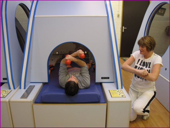

|
Onze afslankstudio bied ook voor mannen de mogelijkheid om af te slanken!
Ook mannen worden steeds zwaarder en willen niet altijd in een sportschool trainen.
Ze zijn in het algemeen niet blij met de vetlagen die zich door de jaren heen rond hun buik opstapelen.
Het kon dan ook niet uitblijven dat de vraag om in warmte te trainen steeds vaker wordt gesteld.
Bent u een man die niet dagelijks op de weegschaal staat?
Gaan strenge diëten en afmattende oefeningen allemaal aan u voorbij?
Bij onze afslankstudio kunt u op een logische manier gewicht verliezen, door de revolutionaire afslankmethode met infrarood, (dieptewarmte) verliest u centimeters, op plaatsen waar u het wilt.
Met infraroodwarmtestraling doet u gedurende 30 minuten specifieke spieroefeningen onder begeleiding.
Dit leidt tot maximale calorieverbranding waardoor u niet alleen afvalt, uw huid wordt eveneens strak en elastisch.
Ons afslankprogramma is zonder gevaar van het befaamde jojo-effect. U wordt intensief begeleid bij het sporten en het afslankprogramma wordt gecomplementeerd met een persoonlijk voedingsadvies.
U kunt een afspraak maken voor een informatie gesprek dat geheel vrijblijvend is.
Tijdens een persoonlijk gesprek voorzien wij u van alle gewenste informatie.
Gratis proefbehandeling
Bel of mail ons voor een afspraak en ervaar onze wijze van afslanken.

|